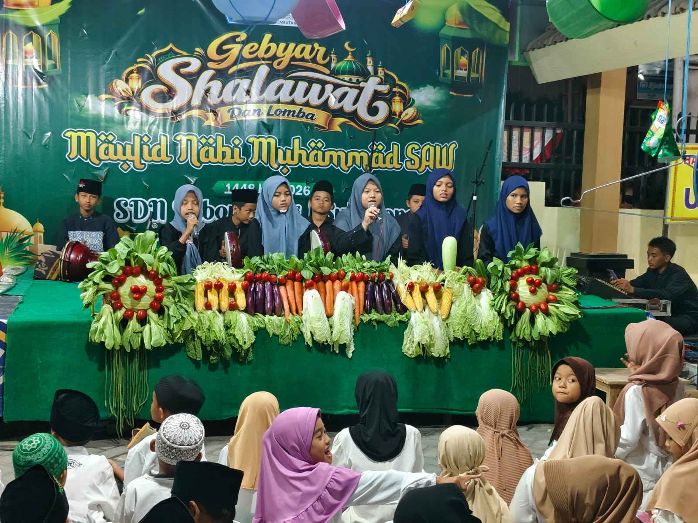
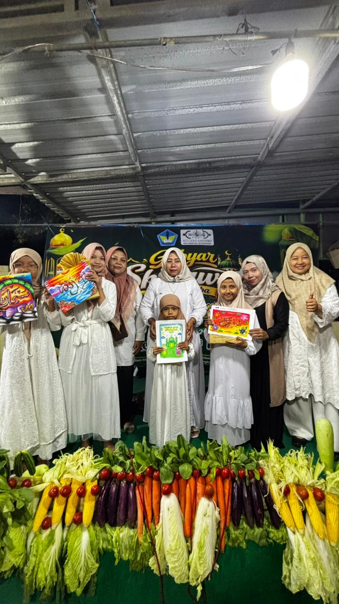
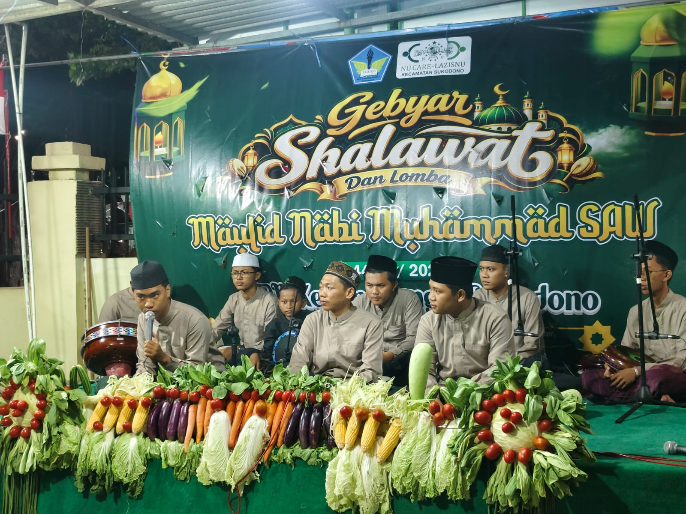
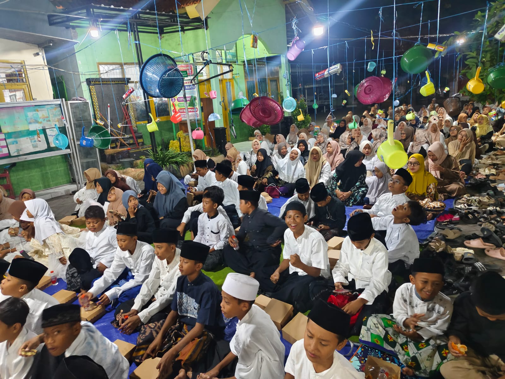

Meriah, Khidmat, dan Penuh Cinta dalam Gebyar Sholawat
SDN Kebonagung 1 Sukodono kembali menghadirkan sebuah kegiatan keagamaan yang penuh makna dan kebersamaan. Pada Sabtu malam, 29 Agustus 2026, halaman SDN Kebonagung 1 dipenuhi suasana hangat, religius, dan penuh kegembiraan melalui kegiatan Gebyar Sholawat dalam rangka menyemarakkan peringatan Maulid Nabi Muhammad SAW.
Kegiatan istimewa ini terselenggara melalui kerja sama SDN Kebonagung 1 dengan LAZISNU. Kerja sama tersebut menghadirkan grup banjari Bisyarin Nahawand dari Kecamatan Taman yang turut memberikan warna tersendiri dalam malam penuh keberkahan tersebut.
Sejak kegiatan dimulai, antusiasme peserta sudah terlihat. Siswa, wali murid, bapak dan ibu guru serta seluruh keluarga besar sekolah hadir dengan semangat. Halaman sekolah yang biasanya menjadi tempat belajar dan bermain, pada malam tersebut berubah menjadi ruang kebersamaan untuk mendekatkan hati kepada Allah SWT serta menumbuhkan rasa cinta kepada Nabi Muhammad SAW.
Acara diawali dengan penampilan grup banjari SDN Kebonagung 1. Para siswa menunjukkan kemampuan mereka dalam membawakan lantunan sholawat dengan penuh percaya diri. Penampilan tersebut menjadi pembuka yang sangat menarik sekaligus membuktikan bahwa pendidikan di sekolah tidak hanya mengembangkan kemampuan akademik, tetapi juga memberikan ruang bagi peserta didik untuk mengembangkan bakat seni Islami.
Setelah penampilan banjari siswa, acara dilanjutkan dengan pembagian hadiah lomba kegiatan Maulid Nabi. Wajah bahagia dan bangga terpancar dari para siswa yang berhasil meraih prestasi dalam berbagai kegiatan lomba. Pemberian hadiah menjadi bentuk apresiasi atas keberanian, kreativitas, kerja keras, dan semangat para siswa dalam mengikuti rangkaian kegiatan.
“Mari jadikan sholawat bukan sekadar lantunan, tetapi sebagai jalan untuk menumbuhkan cinta, keteladanan, persaudaraan, dan akhlak mulia.”
— Semangat Maulid Nabi Muhammad SAW —Suasana semakin hangat ketika kegiatan dilanjutkan dengan lantunan sholawat bersama. Kehadiran grup banjari Bisyarin Nahawand dari Kecamatan Taman membuat suasana semakin semarak. Lantunan sholawat menggema di halaman sekolah, diikuti oleh siswa dan wali murid dengan penuh antusias.
Kebersamaan tersebut menjadi salah satu momen yang sangat berkesan. Siswa dapat melihat secara langsung bagaimana lingkungan sekolah, keluarga, dan masyarakat dapat bersatu dalam sebuah kegiatan positif. Para wali murid pun tidak sekadar hadir sebagai pendamping, tetapi ikut menjadi bagian dari kemeriahan acara dengan bersholawat bersama.
Selain rangkaian kegiatan tersebut, acara juga diisi dengan santunan dari Paguyuban Sekolah. Santunan ini menjadi wujud kepedulian dan semangat berbagi dari keluarga besar SDN Kebonagung 1. Nilai kepedulian, kasih sayang, dan berbagi kepada sesama menjadi pesan penting yang ingin terus ditanamkan kepada seluruh peserta didik.
Rangkaian Kegiatan
🥁 Penampilan Banjari Siswa
Acara dibuka dengan penampilan grup banjari dari SDN Kebonagung 1 sebagai bentuk kreativitas dan kecintaan siswa terhadap seni Islami.
🏆 Pembagian Hadiah Lomba
Para siswa yang mengikuti lomba dalam rangka kegiatan Maulid Nabi mendapatkan apresiasi dan hadiah atas usaha serta prestasi mereka.
🎁 Santunan Paguyuban
Paguyuban sekolah turut memberikan santunan sebagai wujud kepedulian, kebersamaan, dan semangat berbagi.
🌙 Gebyar Sholawat Bersama
Seluruh siswa, wali murid, guru dan keluarga besar sekolah bersholawat bersama dengan iringan grup banjari Bisyarin Nahawand dari Kecamatan Taman.
📸 Galeri Gebyar Sholawat




Kegiatan Gebyar Sholawat ini dapat terlaksana dengan baik dan lancar berkat kekompakan bapak dan ibu guru serta dukungan luar biasa dari Paguyuban Sekolah. Dukungan dan antusiasme yang diberikan menjadi kekuatan utama sehingga seluruh rangkaian kegiatan dapat berlangsung dengan penuh semangat dan kebersamaan.
Kepala SDN Kebonagung 1, Mei Ernawati, S.Pd., M.Pd., menyampaikan rasa syukur dan apresiasinya atas terselenggaranya kegiatan tersebut. Beliau mengatakan bahwa kegiatan seperti ini sangat penting karena bukan hanya menjadi sarana memperingati Maulid Nabi Muhammad SAW, tetapi juga menjadi momentum untuk mempererat hubungan antara sekolah, siswa, guru, wali murid, dan masyarakat.
— Mei Ernawati, S.Pd., M.Pd.
Kepala SDN Kebonagung 1 Sukodono
Gebyar Sholawat akhirnya bukan hanya menjadi sebuah acara seremonial, tetapi menjadi pengalaman berharga bagi seluruh keluarga besar SDN Kebonagung 1. Lantunan sholawat yang menggema menjadi simbol persatuan dan kebersamaan, sementara santunan dan berbagai apresiasi yang diberikan menjadi pengingat bahwa pendidikan karakter juga tumbuh melalui keteladanan, kepedulian, dan semangat berbagi.
Semoga semangat kebersamaan yang telah terbangun dalam kegiatan ini terus terjaga. Semoga lantunan sholawat yang dipanjatkan membawa keberkahan bagi seluruh keluarga besar SDN Kebonagung 1 serta menjadi inspirasi untuk terus menghadirkan kegiatan-kegiatan positif yang mendidik, menyenangkan, dan penuh kasih sayang.
Semarak Maulid, Indah dalam Kebersamaan
Bersholawat bersama, mempererat silaturahmi, menumbuhkan cinta kepada Rasulullah ﷺ, dan membangun generasi berakhlak mulia.